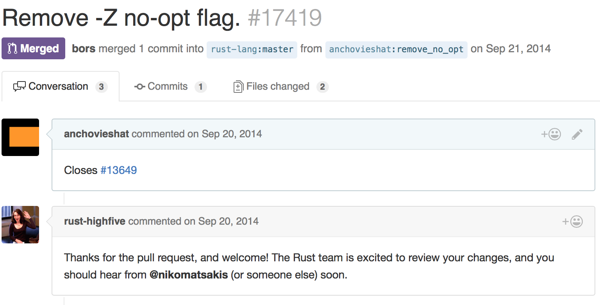

Github Portfolio
Github Portfolio
Skill Summary
- production experience with Python, Rust, C, and JS
- full-stack; frontend to backend to kernel
 Quine8 (Q8)
Quine8 (Q8)
Q8 is an educational tool, designed to show the users a simplified view of what really goes on under the hood of their computer. Using a grid of tiles, it renders the state of the program in memory live, highlighting I/O operations as they occur. With a comprehensive suite of example programs, puzzles, and intro tutorials, users can quickly get a feel for working with a machine on one of the lowest levels, bytecode. Without the abstractions of higher-level languages or even assembly, it provides an interface to make low-level computing building blocks tractable.

Q8 provides only the most basic of operations, giving new users lots of runway to grow. Need multiplication? Discover the joys of writing it yourself using addition and a loop, and learn a lot about programming as you go.
I have been learning Rust and using it in a variety of my own projects. Along the way, I've added minor features to improve my own project development experience, submitting accepted upstream commits along the way.
While working on some basic crypto programming challenges, I discovered that the Rust biguint library didn't have any code for printing biguints in hex. As part of my validation and testing process for the project, I added that feature in my own personal fork, eventually submitting it after approval by the rust-num dev team.
 Nolli
Nolli
Nolli is a tiny hobby kernel that runs on x86. It has a two stage bootloader that pulls it from the primordial 16 bit start state up to a slightly less archaic 32 bits, heroically saving the poor processor from the horrors of the segment registers.
As a learning project primarily, the kernel regularly suffers bouts of triple fault fever, getting better over time as I work out some of the nasty issues. It currently supports basic interrupts and catches some faults; It responds to keyboard input, page faults appropriately on invalid accesses, and can scan the pci bus for attached devices. Nolli can output over both serial and vga, using the BIOS configured VGA mmio at 0xB8000 to draw ascii symbols in various colors.
The bootloader is simple, using bios int calls to build a map of memory, load the kernel from disk, configure the gdt, and transition into 32 bit mode.
 Rain
Rain
Rain's rendering engine positions and draws 2D tiles to give it a 2.5D isometric feel. In order to support camera rotation, the engine selects pre-made tiles from each tile type's palette. To simplify mouse detection while my grid placement and block size were still undetermined, I constructed a screenspace to worldspace map so that mouse clicks would map perfectly onto tile pixels, regardless of orientation.

Rain uses a breadth-first search pathfinder to move the player characters around the map. The player can then select enemies to attack, assuming the player characters can see them. To manage vision, each entity adds the surrounding circle of tiles into their team's visible tile list.

 Zala
Zala
Zala is a side-project that I developed over a period of time after wanting to see a solid space programming game similar to Mojang's 0x10c. Zala has an in-game console and assembler, using an emulated CPU to process instructions. The player can open doors, fire turrets, and fly the ship with a simplified assembly language.

To support a live programming/runtime environment I had to encapsulate the emulator, running it at a fraction of the framerate and sending it a reset flag when new code was available. I created a little messaging system to report errors and CPU output back to the game.
As part of the game, I had to lay out a very simple set of assembly instructions, creating an easier, programmer friendly environment. The assembler allowed for jumping to labels and all the opcodes had one distinct function.
 Snow
Snow
Snow was an experiment into procedural terrain generation and 3D rendering using OpenGL. While learning to render tons of 3D models each frame, I picked through several techniques, trying to get the smoothest framerate for the largest visible number of voxels. I tried using the CPU to create a mesh containing only the visible faces of the terrain, but quickly discovered that doing that created a large amount of vertex processing on the component not designed to handle it. I found that instanced rendering of full cubes moved the vast majority of processing to the gpu instead, and the only work the cpu had to do was to compile a list of cube centers for the hulled mesh.

Using perlin noise, I rapidly generated interesting terrain for the player to explore. Interesting terrain gave me a strong reason to work on the hull meshing. I wanted more to explore and see from a distance.
One of the biggest issues with voxels, especially non-textured voxels, is the need to differentiate between flat surfaces and edges. I wrote an edge detector that processed vertices and applied lighting modifiers when appropriate, emulating ambient occlusion.